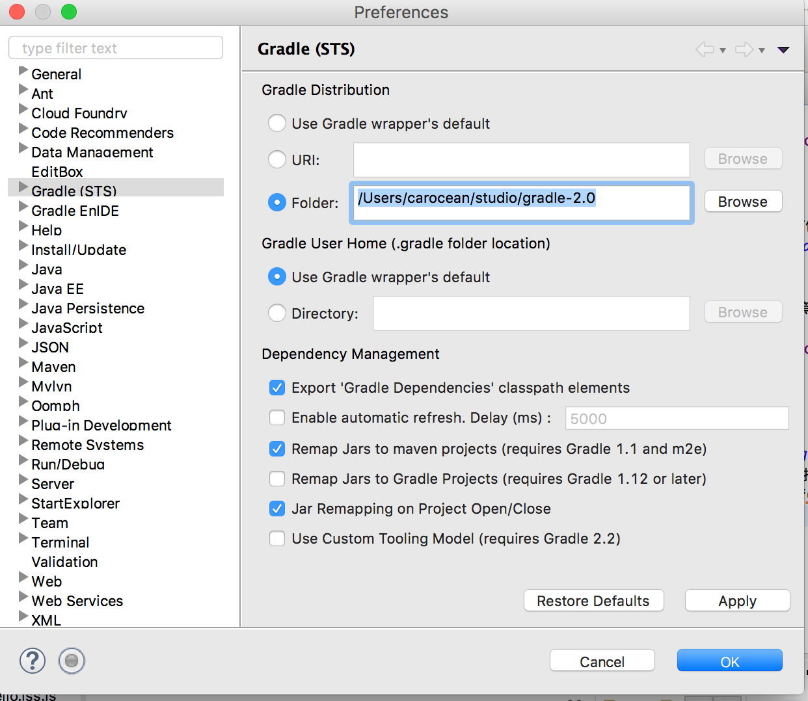
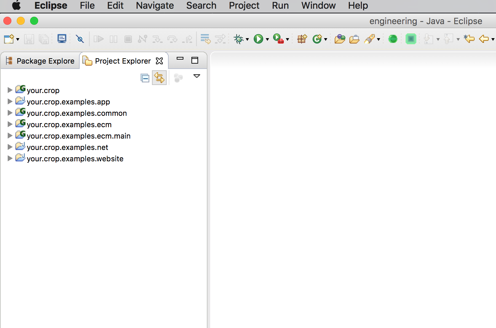
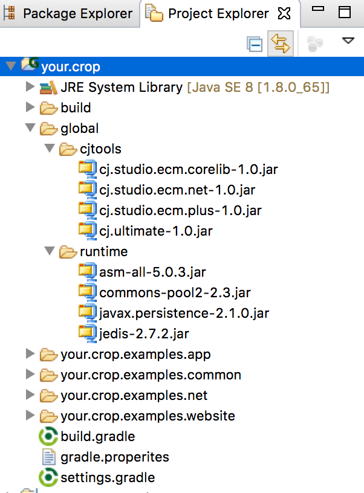
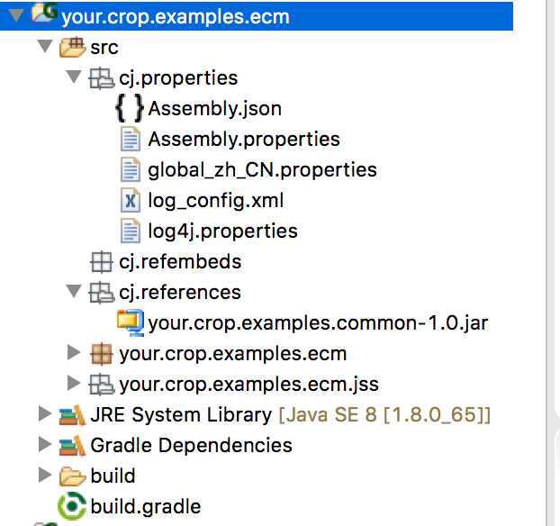

从ecm 工具包的 helloworld 入门
- 作者：cj (赵向彬)发布日期：2016年8月17日 3:24
java j2ee osgi spring dotnet osgi netty tomcat jetty nodejs jsp php aspx zookeeper docker
1. 到java.sun.com下载jdk 1.8 update65以下版本，update66以上版本的js引擎存在“绑定域区间”的bug
2. eclipse配置gradle环境（非必须，但为了生成jar包方便，最好依此步做了）
3. 下载程序集开发环境：engineering ,该项目已经配好了工程的结构，省了你配这配那的麻烦。
4. hello world服务的实现
5. 执行看结果
当然，在介绍过程中会介绍一些相关的知识，如gradle的使用等，但不会太复杂，都是弄好的，就是将来开发也不会改太多
一. eclipse配置gradle环境。 1.下载gradle工具包，我这老好人，都下好了，点这下吧，大概有100m，或者你在百度里找官网下也行，目前用的是2.0版 2.在eclipse里的市场(help->eclipse marketplace)里搜gradle，就那几项，认准哪一个，找到后直接安装。 3.装完了，重启后打开eclipse配置选项卡，在里面找到gradle，在gradle配置面板里的第一项：“Gradle Distribution"一项里，让你设置gradle工具包的主目录，由于第一步已下了，你解压到一个位置，这里就选folder方式，并指向gradle工具包的位置。 4.完事。 贴个图吧，找不着别急哭了  二. 程序集开发环境 1.将下载的环境解压到本地，导入eclipse,注意：不要将工程放到eclipse的工作空间下，导入时不要选择copy，就在原位就好。代码与工作空间分离是最好的习惯，利于干净的拷贝工程 2.导入后会看到下图：  简要说一下，本例只是hello 一下，因此不是所有项目都能用上，相关的项目是： －－ your.crop 工程总项目，它用于通过gradle管理你的子项目。一般命名为你的公司名，如果是正式工程，你就改改这个名字 －－ your.crop.examples.common 公共项目，可有也可没有 －－ your.crop.examples.ecm 你的业务模块，此处命名为ecm了，只是个ecm的例子 －－ your.crop.examples.ecm.main 启动的main类在里面。 好了，先说明一下，如果你不想使用gradle做你的工程的管理就不必用这样的工程结构，你可以按你自己的想法做结构。但是没有用gradle或者ant的话，在调试时，你得手工做项目间的依赖，调试时启动的main项目要引用到所必须的项目，这样才不会缺少类型。同样，在部署时，你得手工将每个项目打包，这是很麻烦的。 3. 打开your.crop.examples.ecm.main的TestEcmMain类，直接在eclipse中运行，则看到以下结果：0 [main] INFO cj.studio.ecm.script.JssModule - 解压到jss模块目录, 位置：/Users/carocean/studio/examples/build/your.crop.examples.ecm/work/modules/ecm/your/crop/examples/ecm/jss。 6 [main] INFO cj.studio.ecm.script.JssModule - 解压到jss模块目录, 位置：/Users/carocean/studio/examples/build/your.crop.examples.ecm/work/modules/ecm/your/crop/examples/ecm/jss。 --------------- module_name:ecm module_home:/Users/carocean/studio/examples/build/your.crop.examples.ecm/work/modules/ecm/your/crop/examples/ecm/jss module_ext:.jss.js module_pack:your.crop.examples.ecm.jss module_unzip:true module_type:logic head jss scope:runtime head shit name:fuck location:JssPrinter.jss.js source:link selectKey1:$.cj.jss.ecm.JssPrinter selectKey2:$.cj.jss.ecm['JssPrinter'] this is jss chip site cj.studio.ecm.context.ModuleSite$ServiceSite@654d8173 1B4A62E7-D407-4B49-91DB-E171E4953024 examples.ecm 1.0.0.0 /Users/carocean/studio/examples/build/your.crop.examples.ecm -----------------end. hello world java --selectKey1:$.cj.jss.ecm.JssPrinter --selectKey2:$.cj.jss.ecm['JssPrinter'] hello world jss在其中我们看到输出了两句：hello world java，hello world jss，这便是java服务和jss服务打出的结果 到此，你可能有许多疑问，接下来我一个一个介绍 三. 项目结构 1. your.crop  说明： －－ global目录是全局库，包括：cjtools，是cj studio下的基础产品工具包，需要什么包，放入什么包，比如要用到netdisk.jar就放入；runtime目录是运行时基础包，此包不能少 －－ 然后就是gradle的总配置 － settings.gradle，用于声明你的子项目：include "your.crop.examples.common" include "your.crop.examples.ecm","your.crop.examples.ecm.main"
此中声明了三个子项目 － build.gradle//常规用法：http://leon-wood.iteye.com/blog/1708644 subprojects { apply plugin: 'java' apply plugin: 'eclipse' apply plugin: 'maven' version = '1.0' sourceSets { main { java{ srcDir "$projectDir/src" } resources{ srcDir "$projectDir/src" } } } sourceCompatibility = 1.8 targetCompatibility = 1.8 repositories { mavenCentral() flatDir(dirs: file("../global/lib")) } dependencies { testCompile 'junit:junit:4.8.2' } jar { manifest.attributes provider: 'cj crops' } tasks.withType(JavaCompile) { options.encoding = "UTF-8" } uploadArchives { repositories { flatDir { dirs file('../release') } } } } task releaseEcm(){ doLast { println 'ecm 环境发布完毕!' } } releaseEcm.dependsOn ':your.crop.examples.ecm:release' releaseEcm.dependsOn ':your.crop.examples.common:release' tasks.getByPath(':your.crop.examples.ecm:release').mustRunAfter tasks.getByPath(':your.crop.examples.common:release')
用于声明所有子项目的共同行为，前面基本上不用变。 releaseEcm是一个输出你的工程的子任务，releaseEcm用来生成hello这个例子，它指向了生成的顺序，即在发布your.crop.examples.ecm项目时，一定要先发布your.crop.examples.common公共项目 在这个hello例子中，由于演示了强类型外部服务的作用，因此才需要一个common项目，后文还有说明。 －－ 程序集(芯片) your.crop.examples.ecm：  说明： 程序集必有cj.properties包路径，在其它必须有这几个文件： Assembly.json 程序集上下文 Assembly.properties 程序集属性 global_zh_CN.properties 全球化语言包 log_config.xml cj日志，用于监控大部分内核的日志 log4j.properties apache的日志，如果你用了netty实现的net一般要使用log4j cj.refembeds包路径，内用于内嵌一些包含有cj service服务声明的jar包，即将别的jar包中的服务嵌入到本程序集中使用。 cj.references程序集依赖包，这是一般的jar包,如本例中将common包放入此处。 build.gradle 属gradle的项目配置，如下：sourceSets { main { java{ srcDir "$projectDir/src" } resources{ srcDir "$projectDir/src" } } } sourceCompatibility = 1.8 targetCompatibility = 1.8 tasks.withType(JavaCompile) { options.encoding = "UTF-8" } repositories { flatDir(dirs: "../global/runtime") } dependencies { //compile project(':your.crop.project.xx');//指定你要依赖的你公司的其它项目 compile fileTree('../global/cjtools') //设计期需要引用该依赖库，如果是项目生成的包你同时可再引入项目compile project(':your.crop.examples.common')，以方便设计时定位到源码，如果将来在神经元或netsite中运行的话，则不必将ecm,net等工具包放入该目录 compile fileTree('src/cj/references') } task releaseToBuild(type: Copy){ dependsOn "build" from 'build/libs/' into '../build/your.crop.examples.ecm'//jar包的输出路径，就在本工程根目录下的build目录下 include '**/*.jar' } task release(type:Copy){ dependsOn "releaseToBuild" } 然后，调出eclipse 的 gradle view窗口，菜单位置：window->show view->other->gradle tasks，在该窗口中先中release任务执行它
四、服务的开发实现 先看入口类：public static void main(String[] args) { testExeHelloworldByAdapater();//以适配器方式调用服务 testExeHelloworldByObType();//以强类型外部服务方式调用服务 }
以适配器方式调用服务 static void testExeHelloworldByAdapater() { //装载程序集 //启动它 //到工具箱中取出helloWorld服务 //转换为适配器，获取到执行器接口，而后执行 IAssembly a = Assembly.loadAssembly( "/Users/carocean/studio/examples/build/your.crop.examples.ecm/your.crop.examples.ecm-1.0.jar"); a.start(); Object obj = a.workbin().part("helloWorld"); IAdaptable adaptable = (IAdaptable) obj; IActuator act = adaptable.getAdapter(IActuator.class); act.exeCommand("echoByJavaPrinter"); act.exeCommand("echoByJssPrinter"); }
以强类型外部服务方式调用服务 static void testExeHelloworldByObType() { /* * 如果想以强类型调用，可设置一公共的common包(非程序集），main项目引用此包，ecm项目的cj.references下放置此包， * 即可在main中强制转换为相应类型 */ IAssembly a = Assembly.loadAssembly( "/Users/carocean/studio/examples/build/your.crop.examples.ecm/your.crop.examples.ecm-1.0.jar"); a.start(); Object obj = a.workbin().part("helloWorld"); IHelloWorld hw = (IHelloWorld) obj; hw.echoByJavaPrinter(); hw.echoByJssPrinter(); }
声明一个hello服务：//声明的方式有三种，一种是像本例中使用的注解方式，一种可以以json方式声明服务，只要在类java类的目录下建立一个与它同名且以.json结属的文件即可。一种可以以xml方式声明服务，与json的声明差不多。 @CjService(name="helloWorld",isExoteric=true)//isExoteric表示声明为包部服务，否则在程序集外部得不到。如果在程序集上下文中将包声明为开放包，则其下服务均为开放服务 public class HelloWorld implements IHelloWorld{ @CjServiceRef() private IPrinter javaPrinter;//由java实现的服务 @CjServiceRef(refByName="$.cj.jss.ecm.JssPrinter") private IPrinter jssPrinter;//由js实现的服务 public void echoByJavaPrinter(){ javaPrinter.printHello(); } public void echoByJssPrinter(){ jssPrinter.printHello(); } }
声明javaPrinter服务：@CjService(name="javaPrinter") public class JavaPrinter implements IPrinter { @Override public void printHello() { System.out.println("hello world java"); } }
声明jssPrinter服务：/* * 说明： * 作者： * extends可以实现一种类型，此类型将可在java中通过调用服务提供器的.getServices(type)获取到。这样在java代码中直接使用接口间接的调用到jss实现 * 注意使用extends的限制： * 1.jss必须实现该接口的方法，而且一定是导出方法，即声明为exports.method=function格式 * 如果未有正确实现extends接口方法，则返回为null * extends的调用参考RefJssService类中的用例 * isStronglyJss:true是强jss类型，它将以extends的接口类型作为jss对象类型 * filter使用它需要在assembly.json中开启过滤器模式，它用于拦截java服务的方法，即此机制实现了以jss代理java的功能 * * 缺陷：java8 nashorn 在jdk8 65u之后的版本存在缺陷65u正常 * 描述：绑定域可见性缺陷，比如一个jss服务的imports域，在非函数代码中可以打印出来，在函数（如：exports.test=function())代码段内却报imports未定义异常。 * ScriptContext.ENGINE_SCOPE * 老外分析：jdk8 102版也存在此问题，95版也存在 * http://stackoverflow.com/questions/37611959/java-8-passing-a-function-through-bindings * */ var String = Java.type('java.lang.String'); print('---------------'); print('module_name:' + imports.module_name); print('module_home:' + imports.module_home); print('module_ext:' + imports.module_extName); print('module_pack:' + imports.module_package); print('module_unzip:' + imports.module_unzip); print('module_type:' + imports.module_type); print('head jss scope:'+imports.head.jss.scope); print('head shit name:'+imports.head.shit.name); print('location:' + imports.locaction); print('source:' + imports.source); print('selectKey1:' + imports.selectKey1); print('selectKey2:' + imports.selectKey2); print('this is jss chip site ' + chip.site()); var info = chip.info(); print(info.id); print(info.name); print(info.version); print(info.getProperty('home.dir')); print('-----------------end.') exports.printHello=function(){ print('--selectKey1:' + imports.selectKey1); print('--selectKey2:' + imports.selectKey2); print('hello world jss'); }